Si voleva fare un giro più ambizioso con discesa per il Canal Piccolo di Meduna, ma il meteo incerto al pomeriggio ci ha fatto ripensare ai piani: spudoratamente ho proposto il Frascola, che tanto in quattro ore siamo su (non proprio).
Il Dosàip alle prime luci dell'alba è sempre uno spettacolo (e mi sa che ormai ho inserito una foto simile per ogni escursione nella zona del Ciul).
Saliamo per percorso noto al Vualt da li Chan, ripido e con traccia saltuaria.
Sotto un clapòn appena più basso della forcella c'è questa scritta.
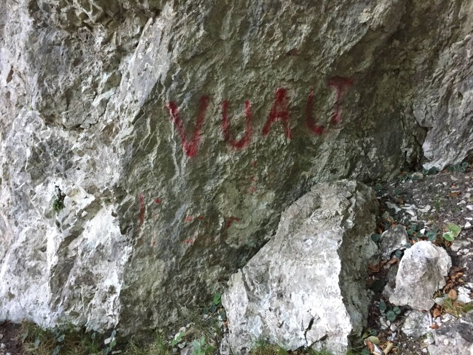Iniziamo a traversare verso la forca del Cuel Flurît.
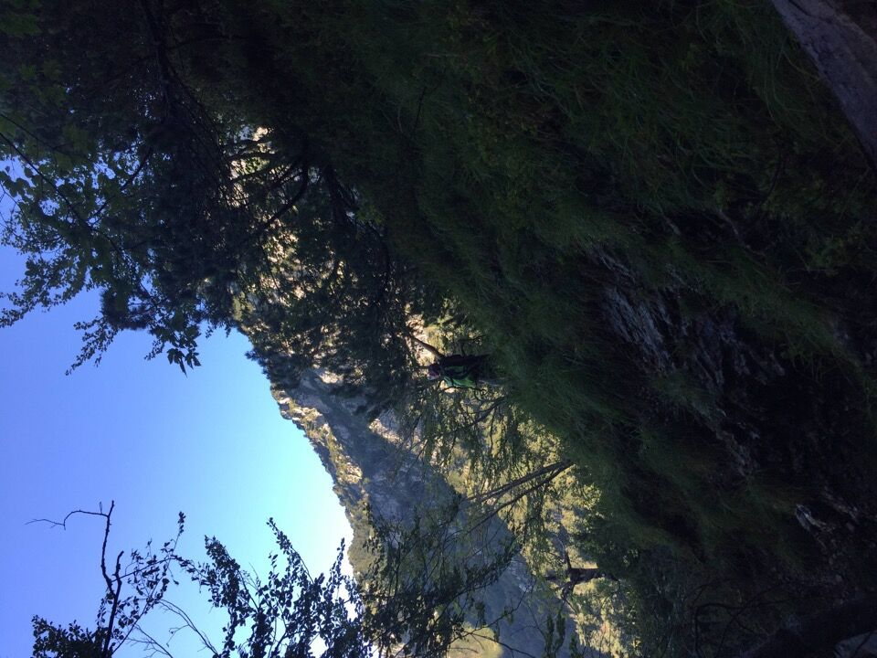La visuale si apre: le Fornezze che sovrastano il Cenglòn.
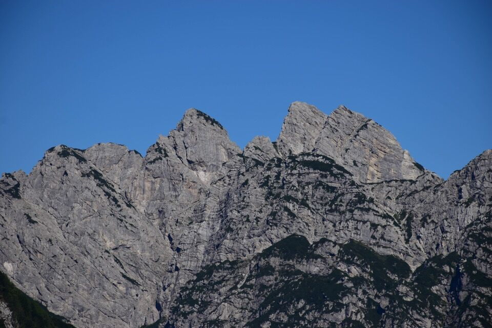Il crestone orientale della Leadicia.
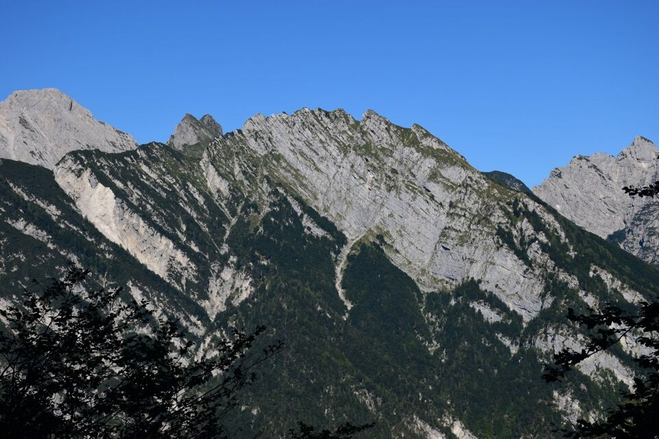Maglìna e Dosàip fanno da sfondo, con le due Colline in primopiano (ma quante cenge)!.
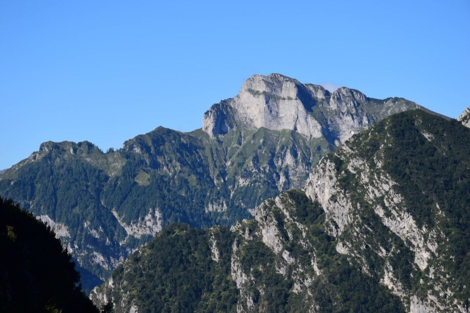Il Filòn di Tadola che sale fino al M. Spiciòn.
Siamo ormai prossimi alla forca del Cuel Flurît.
Stranamente ho fatto poche foto in questa gita... quindi manca qualche pezzo. Qui siamo già nel Rugòn.
La salita del canalone è sempre facile e in bell'ambiente, tutto sommato aperto.
La parte alta della conca del Cjampis...
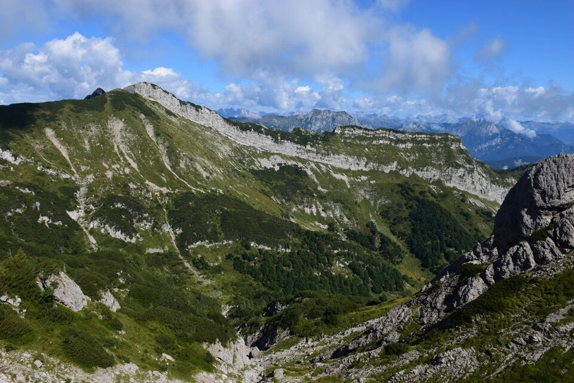...colla forca del Bec.
Le nubi ci fanno i dispetti ma almeno non ci privano del tutto del panorama.
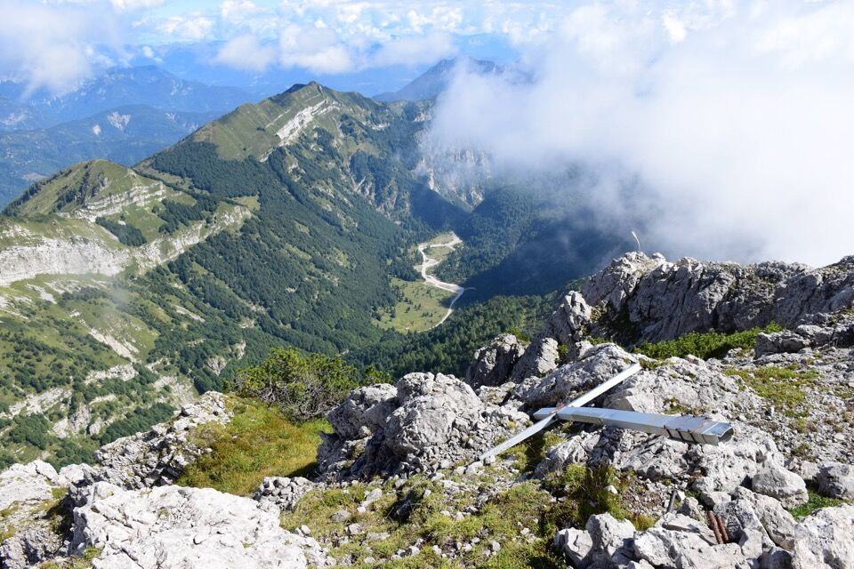 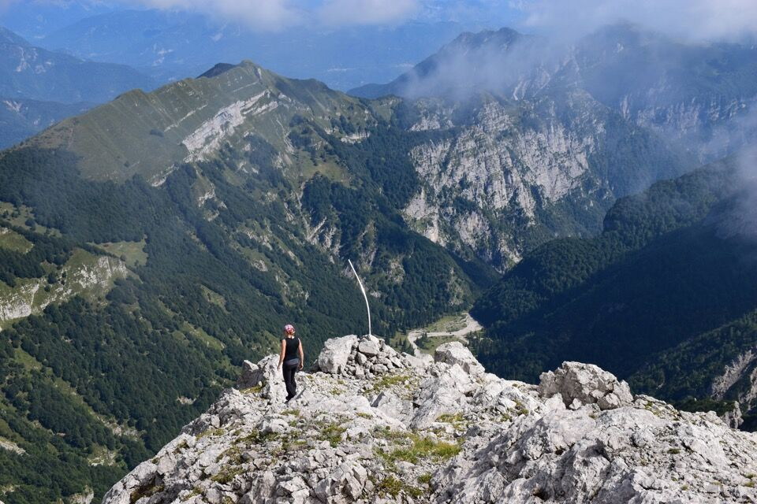La bellissima conca del Cjampis.
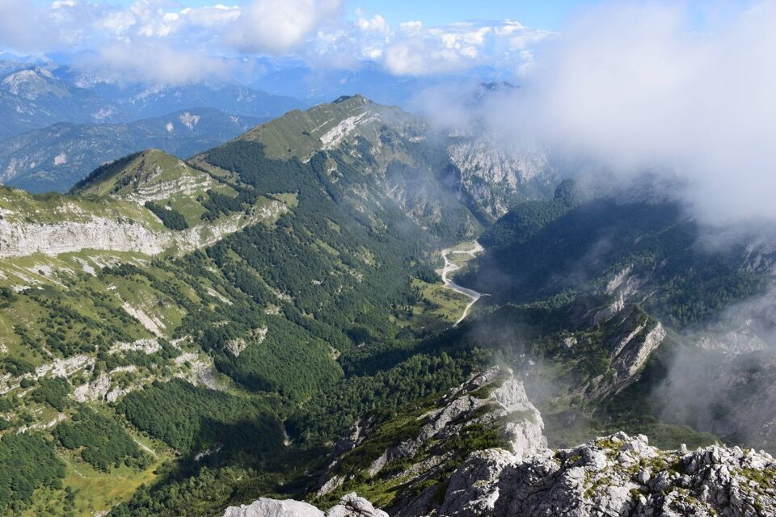Scendiamo per i sentieri CAI a Frasseneit: interminabile! E sentieri CAI davvero mal messi.
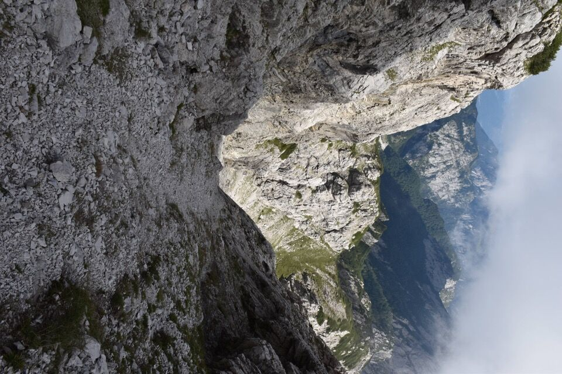Questa credo sia la forcella che vedo sempre da Udine nelle giornate terse: da qui scende un canalone che divide il monte in due, talmente evidente che da tutta la pianura udinese si riconosce il Frascola solo per questo.
Il massiccio del Giavons.
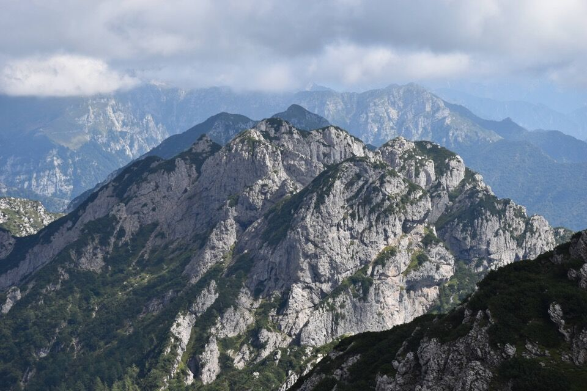Dopo più di dieci ore, rieccoci alla diga del Ciul... con il Cuel Flurît in centro.
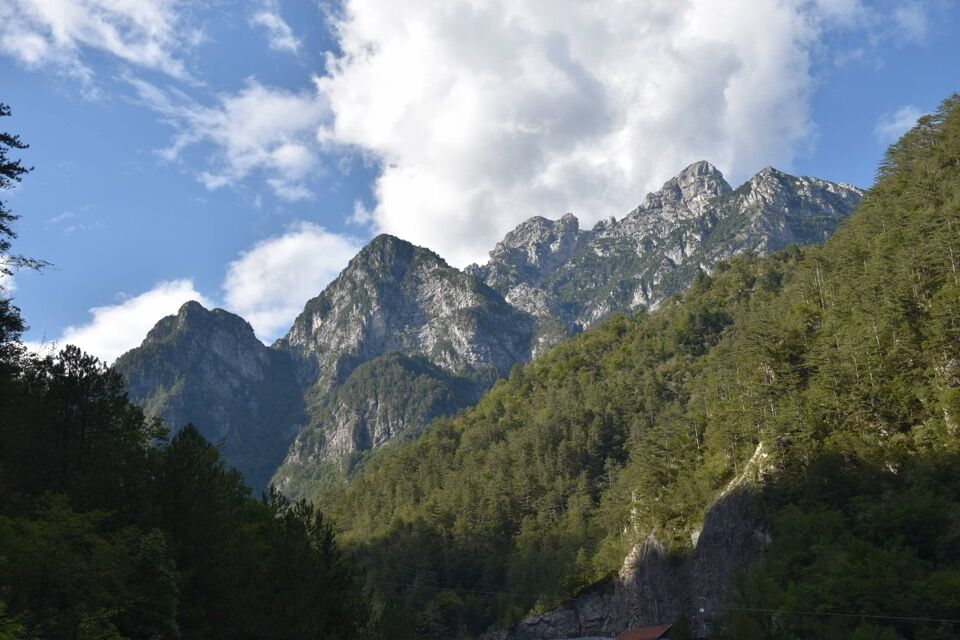